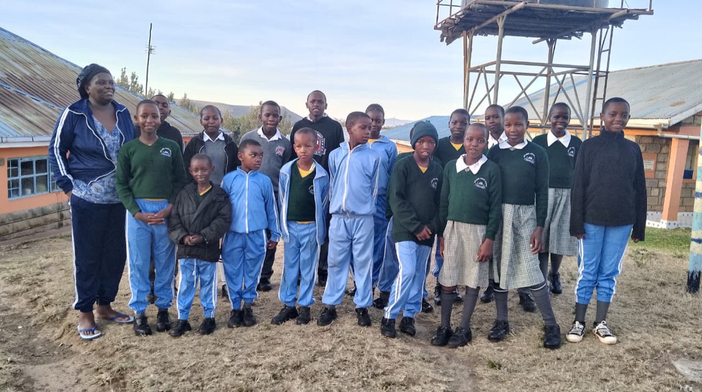
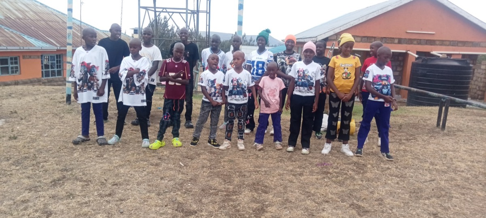
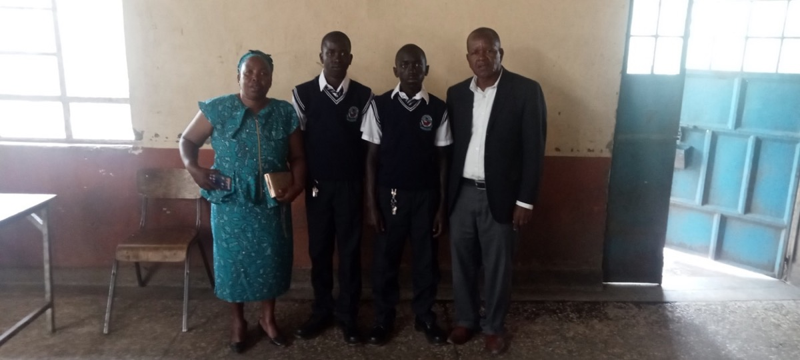
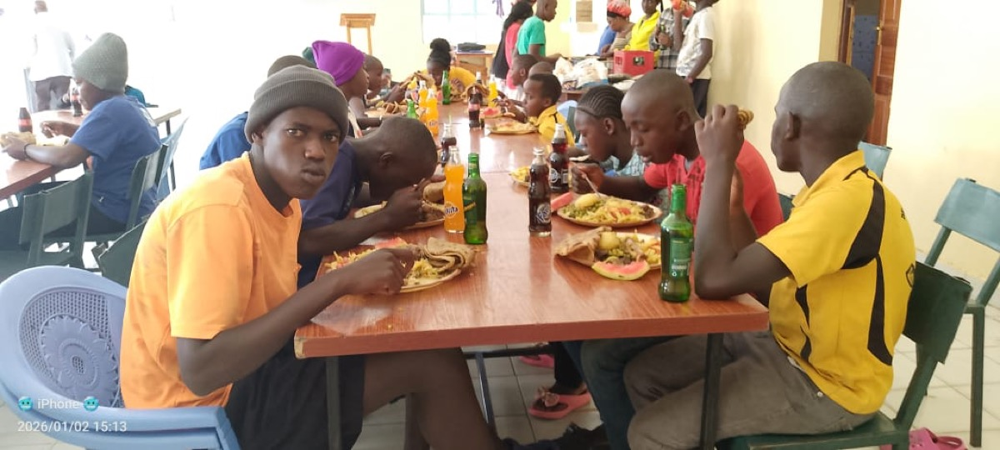
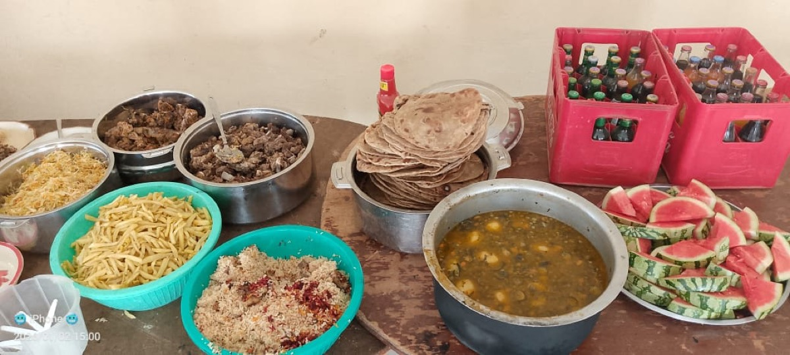
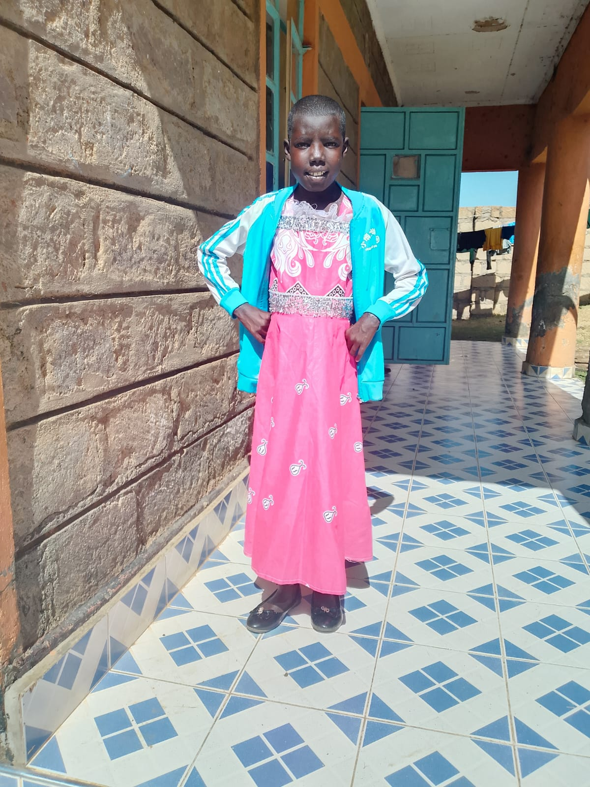
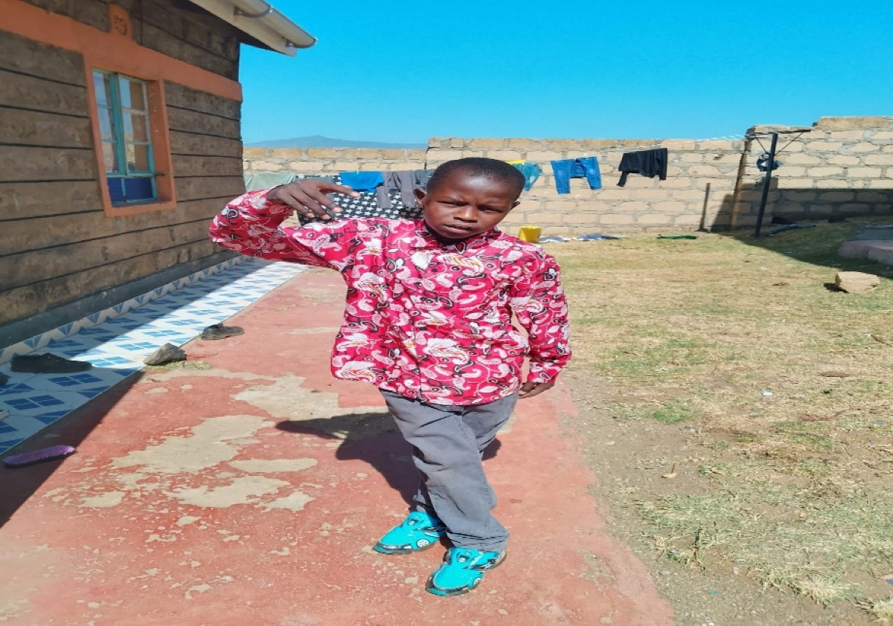

Quarterly Update

Warm greetings to you, your family, and the church.
We write to sincerely thank you for your continued support and commitment to the children at Beat the Drum. Because of your generosity and faithful partnership, we continue to witness transformation in the lives of the children under our care. Your love, prayers, and support remind them that they are valued, remembered, and deeply cared for.

We are deeply grateful for our friends and sponsors, especially Ebenezer Church, who faithfully support the needs of our children. Your contributions go a long way toward the welfare of the BTD family.
Currently, all our children are attending school except for Gladys, whose education has been affected by her medical condition. Gladys undergoes dialysis twice a week and has experienced several hospital admissions. However, whenever she is discharged from the hospital and able to attend, she faithfully returns to school and continues with her studies.
Your partnership is not just financial support — it is restoring hope and giving every child the opportunity for a brighter future.

Education remains one of our core priorities. We are pleased to report that all school-going children are enrolled and attending school consistently. At the beginning of this academic year, two students joined Junior School, while the rest of the children successfully progressed to the next grade levels.
In addition to academic learning, we continue to emphasize discipline, responsibility, and character development, helping the children grow into responsible and confident individuals.
We are encouraged to see many of them developing confidence, ambition, and hope for their future.
Christmas was a joyful and memorable season for our children. Through your support, we were able to organize a meaningful celebration that included:


The celebration created a wonderful atmosphere of joy and gratitude, reminding the children that they are loved, valued, and not forgotten.
Thank you for making Christmas special and meaningful for them.
We thank God for the continued progress in our farming projects, which play an important role in supporting both nutrition and sustainability at the home.
Recently, we slaughtered some chickens from our poultry project to improve the children's meals. Our dairy cows continue producing milk consistently, supporting the children's nutritional needs while also contributing to sustainability. Our fruit project is also doing well, particularly bananas and mangoes.
Although we experienced some dry spells, the onset of the rains gives us hope for a successful vegetable farming season ahead. We remain committed to strengthening food security for the benefit of the children.
The overall health of the children remains stable, except for two children who continue to require close medical attention.
Routine medical check-ups have been conducted, and children on long-term medication continue to receive consistent monitoring. Nutrition standards have been maintained to support proper growth, and health education sessions were conducted to promote hygiene and preventive care. We remain committed to ensuring that every child receives timely and quality medical attention whenever needed.
Below is a detailed update on the two children currently facing health challenges.

Two years ago, Gladys was diagnosed with diabetes, which later led to severe kidney complications requiring dialysis. Since then, she has courageously endured a difficult medical journey marked by frequent hospital admissions and repeated procedures.
Gladys currently undergoes dialysis twice every week. Due to repeated catheter blockages and infections, she has experienced multiple hospital admissions at Kenyatta National Hospital (KNH).
Recent developments include:
She was admitted at Kenyatta National Hospital for one week in February. In addition, Gladys is currently experiencing some side effects, especially fluid accumulation and some ENT issues, which she already has a scheduled clinic for.
Despite her condition, Gladys remains determined to continue her education, although she misses two school days each week due to dialysis treatments.
Recent changes in Kenya's health insurance system from NHIF to SHA have significantly affected children living in charitable homes. Unfortunately, Gladys is currently not covered, and previous support avenues through the government system are no longer available. As a result, all dialysis sessions and hospital bills must now be paid in cash.
Medical costs:
Dialysis per session: KES 11,872 (~$92 USD)
Weekly dialysis cost: KES 23,744 (~$184 USD)
A permanent catheter procedure was performed on 17 February 2026, and we hope this will reduce complications and repeated procedures.
From 1 January 2026 to date, the total medical cost has reached KES 389,744 (~$3,020 USD).
These expenses continue to increase due to:

Although Raphael has been reported to have good adherence to his medication, his viral load has unfortunately been increasing with each repeat test. As of November 2025, his viral load was 20,900 copies, which indicates the need for further medical investigation.
Raphael attends clinic at Kijabe Hospital, where doctors have planned to conduct a Drug Resistance Test (DRT).
We are deeply grateful for your continued partnership and generosity. Gladys' life today is sustained through consistent dialysis and medical care made possible through your support and prayers.
We kindly request your continued support as we navigate these unexpected and high medical costs, ensuring that her treatment continues without interruption.
Once again, we extend our heartfelt gratitude to you, your family, and the entire church for standing with us and the children at Beat the Drum. Your prayers, generosity, and continued partnership are making a real and lasting difference in their lives. Because of your support, these children are able to grow in a safe environment, pursue their education, and receive the care they need to build a hopeful future.
We remain committed to nurturing them not only physically and academically, but also spiritually and emotionally. May God richly bless you for your kindness and faithfulness. We look forward to continuing this journey together as we transform lives and restore hope.
Your generosity sustains these children's education, healthcare, and daily needs.
Give NowPlease select "Beat the Drum (Glory Outreach Assembly)" from the dropdown menu.